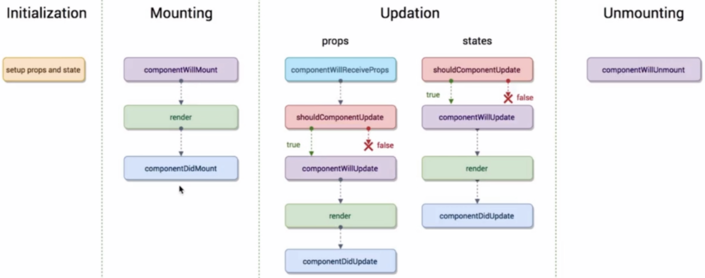

生命周期函数指在某一个时刻组件会自动调用执行的函数 
- Initialization
- setup props and state
- Mounting
- componentWillMount 组件即将被挂载到页面的时刻调用
- render
- componentDidMount 组件被挂载到页面后调用
- Updation
- props
- componentWillReceiveProps 一个组件从父组件接收了参数，只要父组件的render函数被重新执行了，子组件的这个生命周期函数就会被执行
- shouldComponentUpdate 组件被更新之前调用，该方法需要返回true/false，用以告知React是否继续下面的工作
- componentWillUpdate
- render
- componentDidUpdate
- states
- shouldComponentUpdate
- componentWillUpdate
- render
- componentDidUpdate
- props
- Unmounting
- componentWillUnmount
生命周期函数的使用场景
componentWillMount
render
componentDidMount
发送ajax请求放在这个生命周期函数里是最合适不过的。
import axios from 'axios'
componentDidMount () {
axios.get('/api/todolist').then(response => {
this.setState(() => ({
list: [...response.data]
}))
})
}
componentWillReceiveProps
shouldComponentUpdate
在之前的TodoList组件中，我们在输入框中输入内容， 父组件的render函数被重新执行，TodoItem组件中的render函数也会被重新执行，但是此时我们还没有点击提交按钮，TodoItem此时根部不需要重新渲染才对，所以我们需要在这个生命周期函数中做一个判断，只有当下一个props里的content和当前的content不相等的时候，我们才让组件重新渲染
/**
* 该方法接收两个参数
* nextProps 下一个props
* nextState 下一个state
*/
shouldComponentUpdate (nextProps, nextState) {
// 我们在这里做判断，如果下一个content和当前的content不相同时才允许组件重新渲染
return nextProps.content !== this.props.content
}
componentWillUpdate
componentDidUpdate
componentWillUnmount